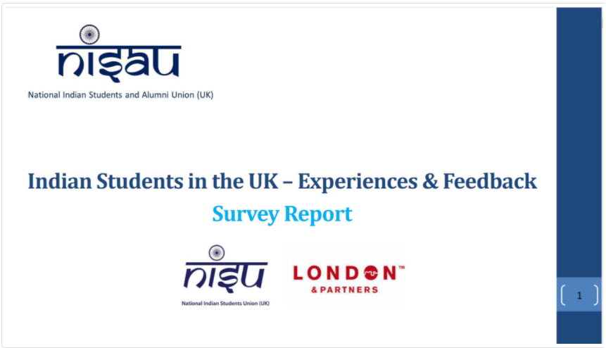
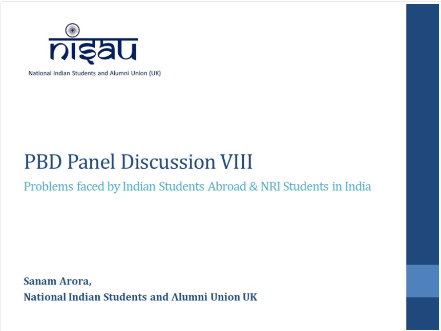
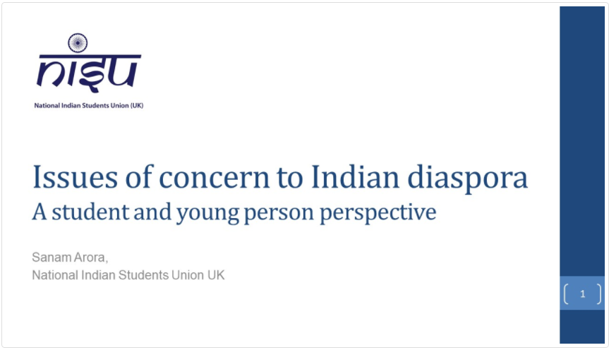
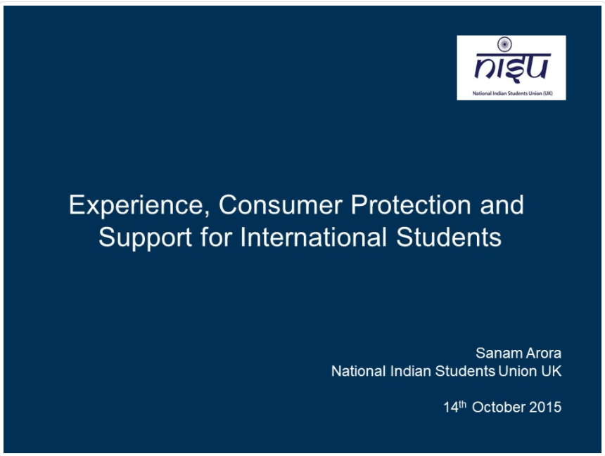

Thought Leadership
NISAU often produces thought leadership on various areas of interest and relevance. These can be made available to relevant audiences, on demand, except where they are confidential and not restricted by sharing guidelines.
- Internationalising the UK Curricula — Speech at Westminster Higher Education Policymaking Forum
- Indian Students in UK - Experiences and Feedback - Research project for London and Partners 
- Problems faced by Indian Students Abroad & NRI Students in India — Discussion with Honourable Ministers Mrs Sushma Swaraj and Mr Prakash Javadekar 
- Issues of concern to Indian diaspora; a student and young person perspective — Speech at Regional Pravasi Bharatiya Divas 2014, London 
- Experience, Consumer Protection and Support for International Students — Speech at Westminster Higher Education Policymaking Forum 
- India's transition to a knowledge economy — role of diaspora - Speech at High Commission of India, London
- Next Steps for UK Immigration Policymaking — Speech at Westminster Legal Policymaking Forum
- UK General Elections 2017 - Manifesto Comparison vis a vis Higher Education — Prepared for Public Benefit